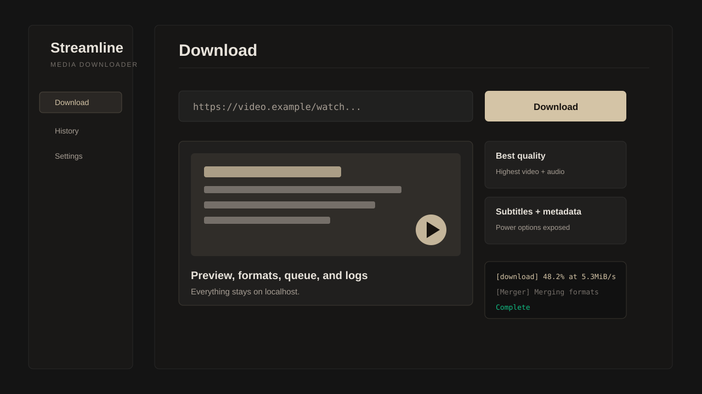

Streamline
A local, open-source WebUI for yt-dlp. Paste a URL, preview the media, choose exactly what to save, and let the queue handle the rest.

A calm interface over serious yt-dlp power.
Preview and formats
Inspect title, thumbnail, duration, uploader, and every useful video or audio format before downloading.
Queue and playlists
Add many downloads, reorder pending work, select playlist entries, cancel active jobs, and keep a history.
Power options
Subtitles, thumbnails, metadata, chapters, cookies, SponsorBlock, archive files, throttling, and custom flags.
All PRD phases are represented in the codebase.
Provisioned Python, yt-dlp, ffmpeg, and environment repair.
Core preview, format selection, download, progress, and logs.
Queue, playlist selection, history, and notifications.
Full advanced yt-dlp feature surface through the WebUI.
Launch docs, CI, and publish automation.